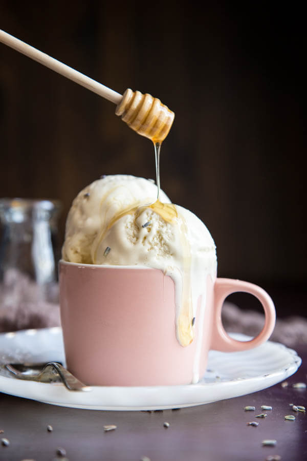

Honey Lavender Ice Cream

Description
Ice cream is Summer’s best friend. This Honey Lavender Ice Cream will not only cool you down
but its aroma will also take you on a relaxing summer vacation away from the hustle bustle of
everyday life.
Ingredients
- 2 cups whole milk
- 1/2 cup heavy cream
- 2 tablespoon dried lavender flowers
- 4 egg yolks
- 1/4 cup sugar
- 4 oz cream cheese
- 1/2 cup honey
- 1/4 teaspoon pure vanilla extract
- 1 pinch of salt
Steps
- Add dried lavender flower to a spice bag and add it to a saucepan with the milk and cream. Bring the
mixture to a simmer on the stove top over medium heat, turn off the heat and steep for 5 - 10 minutes.
Remove the spice bag or if not using a spice bag, strain the mixture to remove the dried lavender.
- In the bowl of a stand mixer, add egg yolks and beat on low speed. Slowly add sugar, continue beating
until light in color and creamy.
- Bring the milk and cream mixture back to a simmer and temper it into the egg mixture by adding just a
little bit of hot liquid, a few tablespoons at a time, to the egg mixture with the mixer on low speed.
Allow to incorporate before pouring in more.
- Once all of the hot milk has been added to the egg mixture, pour the entire liquid mixture back into
the saucepan and heat on medium low heat until the custard thickens and reaches 175°F - 180°F. This
will take approximately 4 - 4:30 minutes. The custard should coat the back of a spoon, and not run off
when you swipe your finger across the middle.
- Add softened cream cheese, honey, vanilla extract and salt to the hot custard mixture and stir until
completely dissolved.
- Allow to cool to room temperature uncovered and refrigerate overnight or until cold enough to use in
an ice cream maker.
- Churn in an ice cream maker according to the manufacturer's directions. I churn mine for 15 - 20 minutes.
- Transfer churned ice cream to an airtight container and freeze for at least 4 hours before serving.